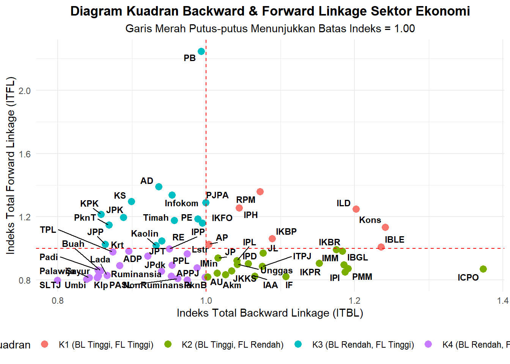
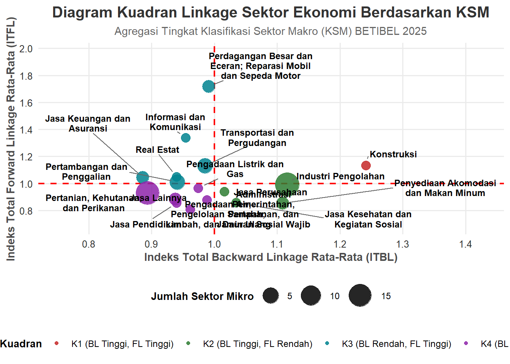
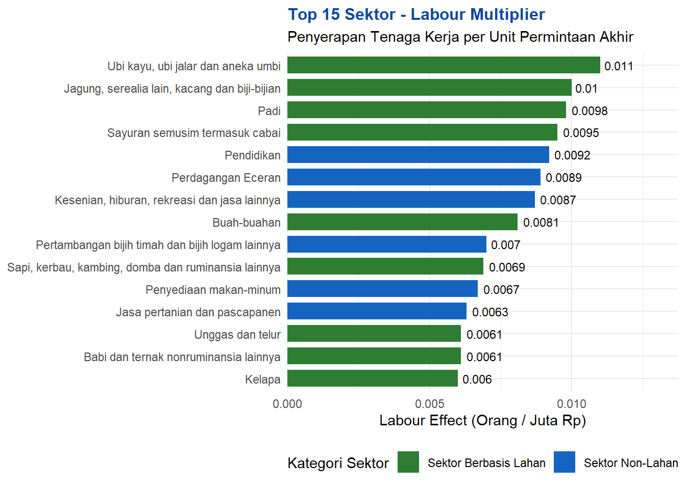
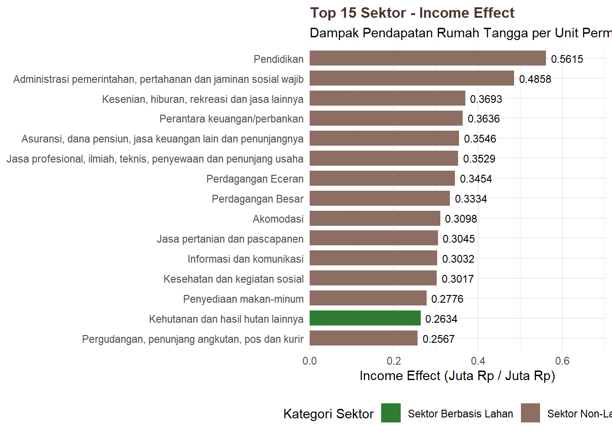
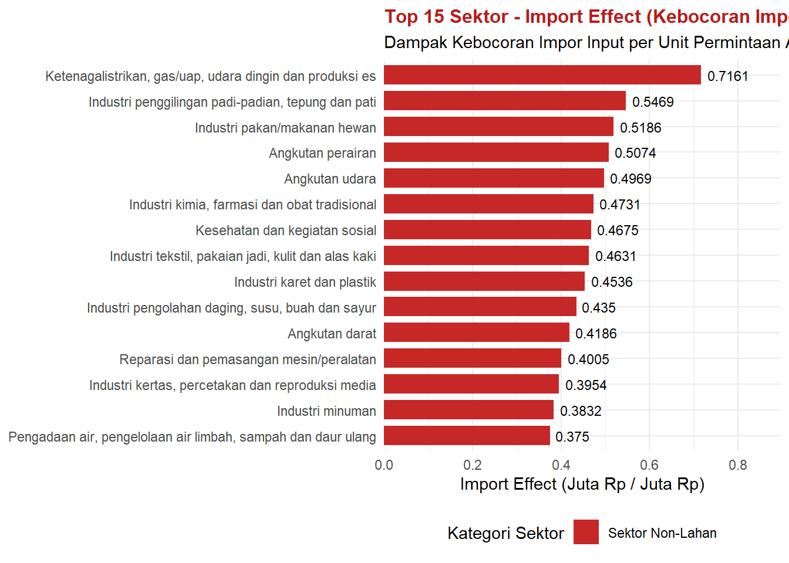

| No | Keterangan Data Input | Nama Variabel R | Nama File XLSX |
|---|---|---|---|
| 1 | Tabel Input-Output BETIBEL tahun 2025 | IO BETIBEL |
io |
| 2 | Data deskripsi sektor yang berisi: • Nama pendek sektor • Nama singkat sektor • Kategori KSM • Label constrained sector • Label unconstrained sector • Rataan pertumbuhan PDRB ADHK (yoy) setiap sector unconstrained • Jumlah tenaga kerja setiap sektor di tahun 2025 |
DeskripsiSektor |
DeskripsiSektor |
| 3 | Data Land Distribution Coefficient BAU | LDM |
LDM |
| 4 | Data luasan lahan (dalam hektare) berdasarkan tipe land cover historis dan proyeksi menggunakan asumsi skenario BAU | BAU_Lahan |
BAU_Lahan |
| 5 | Data luasan lahan (dalam hektare) berdasarkan tipe land cover historis dan proyeksi menggunakan asumsi skenario IMLaS | LAS_Lahan |
LAS_Lahan |
| 6 | Skenario tipe 1 menggunakan asumsi perubahan lahan yang disimbolkan menjadi LDC | SType1 |
SType1 |
| 7 | Skenario tipe 2 menggunakan beberapa asums: •perubahan produktivitas •perubahan harga •manfaat tambahan •resiko (?) |
SType2 |
SType2 |
| 8 | Skenario tipe 3 menggunakan asumsi perubahan komposisi input-output sektor (hilirisasi dan perubahan investasi) | SType3 |
SType3 |
| 9 | Data jumlah populasi BETIBEL tahun 2025 dan proyeksi tahun 2025 hingga 2045 | populasiPenduduk |
populasiPenduduk |
| 10 | Data jumlah populasi wilayah pesisir BETIBEL tahun 2025 dan proyeksi tahun 2025 hingga 2045 | populasiPendudukPesisir |
populasiPesisir |
RegEco - BETIBEL
Regional Economy Simulation
Untuk mengestimasi dampak ekonomi dari skenario perubahan tutupan lahan spasial terhadap PDRB regional, penelitian ini menerapkan pendekatan Land-Extended Input-Output (LEIO) yang dikombinasikan dengan Mixed Endogenous-Exogenous Input-Output Model (Miller & Blair, 2009). Kerangka kerja hubungan antara koefisien penggunaan lahan fisik dan transaksi moneter mengacu pada metode Land Requirement Coefficient yang dikembangkan oleh Hubacek & Sun (2001) dan Hubacek & Vazquez (2002).
Mengingat output sektor berbasis lahan dibatasi secara fisik oleh kapasitas tutupan lahannya, perubahan output sektor tersebut (ditransformasikan dari perkalian perubahan luas lahan dengan produktivitas lahan . Untuk menghindari estimasi ganda (overestimation) pada matriks Kebalikan Leontief, status output sektor lahan dijajarkan secara eksogen mengikuti formulasi Mixed I-O (Papadas & Dahl, 1999; Miller & Blair, 2009), sedangkan estimasi PDRB sektor non-lahan dihitung secara terintegrasi.
Data Input and Reading
Terdapat 10 file data input berformat xlsx yang digunakan, yaitu:
Linkages analysis
Analisis keterkaitan sektor digunakan untuk mengetahui seberapa kuat interaksi antarsektor dalam suatu wilayah melalui hubungan input yang dibutuhkan dan output yang dihasilkan. Keterkaitan antarsektor dapat dilihat dari dua arah, yaitu keterkaitan ke belakang (backward linkage) dan keterkaitan ke depan (forward linkage). Semakin tinggi nilai backward linkage, semakin besar ketergantungan suatu sektor terhadap input yang berasal dari sektor-sektor lainnya. Sementara itu, semakin tinggi nilai forward linkage, semakin besar peran output suatu sektor sebagai input bagi sektor-sektor lainnya.
Klasifikasi sektor dalam diagram dilakukan berdasarkan Indeks Daya Penyebaran (backward linkage) dan Indeks Derajat Kepekaan (forward linkage), dengan nilai 1,00 sebagai threshold yang merepresentasikan rata-rata keterkaitan antarsektor. Dengan demikian, sektor dengan nilai indeks lebih dari 1 menunjukkan keterkaitan yang berada di atas rata-rata, sedangkan nilai kurang dari 1 menunjukkan keterkaitan yang berada di bawah rata-rata.


| Sektor Makro (KSM) | Jml Sektor | Rerata ITBL | Rerata ITFL | Kuadran | Klasifikasi Peran |
|---|---|---|---|---|---|
| Administrasi Pemerintahan, Pertahanan, dan Jaminan Sosial Wajib | 1 | 0.9828 | 0.8703 | K4 (BL Rendah, FL Rendah) | Sektor Terisolasi / Lemah (Weak Sector) |
| Industri Pengolahan | 19 | 1.1232 | 0.9929 | K2 (BL Tinggi, FL Rendah) | Sektor Pendorong Hulu (Backward-Oriented) |
| Informasi dan Komunikasi | 1 | 0.9494 | 1.3504 | K3 (BL Rendah, FL Tinggi) | Sektor Pendukung Hilir (Forward-Oriented) |
| Jasa Kesehatan dan Kegiatan Sosial | 1 | 1.0310 | 0.8508 | K2 (BL Tinggi, FL Rendah) | Sektor Pendorong Hulu (Backward-Oriented) |
| Jasa Keuangan dan Asuransi | 2 | 0.8800 | 1.0366 | K3 (BL Rendah, FL Tinggi) | Sektor Pendukung Hilir (Forward-Oriented) |
| Jasa Lainnya | 2 | 0.9308 | 0.8765 | K4 (BL Rendah, FL Rendah) | Sektor Terisolasi / Lemah (Weak Sector) |
| Jasa Pendidikan | 1 | 0.9332 | 0.8481 | K4 (BL Rendah, FL Rendah) | Sektor Terisolasi / Lemah (Weak Sector) |
| Jasa Perusahaan | 1 | 1.0088 | 0.9303 | K2 (BL Tinggi, FL Rendah) | Sektor Pendorong Hulu (Backward-Oriented) |
| Konstruksi | 1 | 1.2493 | 1.1347 | K1 (BL Tinggi, FL Tinggi) | Sektor Kunci (Key Sector) |
| Pengadaan Air; Pengelolaan Sampah, Limbah, dan Daur Ulang | 1 | 0.9574 | 0.8009 | K4 (BL Rendah, FL Rendah) | Sektor Terisolasi / Lemah (Weak Sector) |
| Pengadaan Listrik dan Gas | 1 | 0.9685 | 0.9579 | K4 (BL Rendah, FL Rendah) | Sektor Terisolasi / Lemah (Weak Sector) |
| Penyediaan Akomodasi dan Makan Minum | 2 | 1.1259 | 0.8454 | K2 (BL Tinggi, FL Rendah) | Sektor Pendorong Hulu (Backward-Oriented) |
| Perdagangan Besar dan Eceran; Reparasi Mobil dan Sepeda Motor | 2 | 0.9861 | 1.7275 | K3 (BL Rendah, FL Tinggi) | Sektor Pendukung Hilir (Forward-Oriented) |
| Pertambangan dan Penggalian | 4 | 0.9332 | 1.0146 | K3 (BL Rendah, FL Tinggi) | Sektor Pendukung Hilir (Forward-Oriented) |
| Pertanian, Kehutanan, dan Perikanan | 17 | 0.8908 | 0.9291 | K4 (BL Rendah, FL Rendah) | Sektor Terisolasi / Lemah (Weak Sector) |
| Real Estat | 1 | 0.9338 | 1.0391 | K3 (BL Rendah, FL Tinggi) | Sektor Pendukung Hilir (Forward-Oriented) |
| Transportasi dan Pergudangan | 4 | 0.9807 | 1.1316 | K3 (BL Rendah, FL Tinggi) | Sektor Pendukung Hilir (Forward-Oriented) |
Multiplier Analysis
Analisis multiplier digunakan untuk mengetahui besarnya dampak ekonomi yang ditimbulkan oleh perubahan permintaan akhir pada suatu sektor terhadap perekonomian secara keseluruhan. Dampak ekonomi yang dianalisis meliputi output, tenaga kerja, pendapatan, dan kebutuhan impor.
Output multiplier menunjukkan besarnya perubahan total output seluruh sektor yang ditimbulkan oleh adanya perubahan permintaan akhir pada suatu sektor. Hasil analisis output multiplier di wilayah BETIBEL tahun 2025 menunjukkan bahwa sektor penggilingan padi memiliki nilai output multiplier tertinggi, diikuti oleh sektor Kayu gergajian dan informasi & komunikasi. Sektor penggilingan padi memiliki nilai output multiplier sebesar 1.9705. Artinya, setiap peningkatan permintaan akhir sebesar Rp1 juta pada sektor tersebut akan mendorong peningkatan output perekonomian secara keseluruhan sebesar sekitar Rp 1,97 juta melalui keterkaitan antarsektor.
Dari 15 sektor dengan nilai output multiplier tertinggi, belum terdapat sektor berbasis lahan yang masuk dalam kelompok tersebut. Hal ini menunjukkan bahwa, berdasarkan struktur keterkaitan input-output BETIBEL tahun 2025, sektor berbasis lahan belum menjadi sektor yang memiliki efek pengganda output paling besar dibandingkan sektor-sektor lainnya.

Analisis Labour effect menunjukkan besarnya tambahan tenaga kerja yang terserap sebagai dampak dari peningkatan permintaan akhir pada suatu sektor, baik secara langsung maupun tidak langsung melalui keterkaitan antarsektor. Nilai labour effect dinyatakan dalam jumlah tenaga kerja yang terserap untuk setiap peningkatan permintaan akhir sebesar Rp1 juta.
Hasil analisis labour effect di wilayah BETIBEL tahun 2025 menunjukkan bahwa sektor Perikanan tangkap memiliki labour effect tertinggi (0,4594), diikuti oleh sektor perikanan budidaya payau/laut (0.2937). Nilai labour effect sektor perikanan tangkap sebesar 0,4594 bermakna bahwa setiap peningkatan permintaan akhir sebesar Rp1 juta pada sektor tersebut berpotensi meningkatkan penyerapan tenaga kerja sekitar 0,4594 orang, atau setara dengan sekitar 46 orang untuk setiap peningkatan permintaan akhir sebanyak Rp1 miliar.
Berbeda dengan hasil output multiplier, sektor berbasis lahan cukup dominan dalam labour effect. Dari 15 sektor dengan nilai labour effect tertinggi, sebagian besar merupakan sektor berbasis lahan antara lain sektor produk peternakan lainnya, budidaya rumput laut, kopi, perikanan budidaya air tawar, unggas, dan sayuran. Hal ini menunjukkan bahwa sektor berbasis lahan di BETIBEL memiliki peran yang relatif besar dalam penyerapan tenaga kerja.

Analisis income effect (efek pendapatan) digunakan untuk mengetahui besarnya dampak peningkatan permintaan akhir suatu sektor terhadap pendapatan rumah tangga yang dihasilkan dalam perekonomian. Hasil analisis income effect di wilayah BETIBEL tahun 2025 menunjukkan bahwa sektor administrasi pemerintah, pertahanan & jaminan sosial wajib memiliki nilai income effect tertinggi, yaitu sebesar 0,6683, diikuti oleh budidaya rumput laut (0,5757). Artinya, setiap peningkatan permintaan akhir sebesar Rp1 juta pada sektor administrasi pemerintah, pertahanan & jaminan sosial wajib akan mendorong peningkatan pendapatan rumah tangga sekitar Rp 668 ribu melalui aktivitas ekonomi yang tercipta dalam perekonomian.
Dari 15 sektor dengan nilai income effect tertinggi, terdapat beberapa sektor berbasis lahan yaitu budaiya rumput laut, kakao, unggas, umbi-umbian, sapi/kerbau dan kambing/domba, padi, rotan dan HHBK lainnya. Hal ini menunjukkan bahwa berdasarkan struktur perekonomian BETIBEL tahun 2025, sektor berbasis lahan di BETIBEL memiliki peran yang relatif besar dalam menghasilkan pendapatan rumah tangga.

Analisis import effect (efek kebocoran impor) digunakan untuk mengetahui besarnya kebutuhan input impor yang timbul akibat peningkatan permintaan akhir pada suatu sektor. Indikator ini menunjukkan seberapa besar bagian dari tambahan permintaan akhir yang harus dipenuhi melalui input dari luar wilayah, sehingga semakin tinggi nilai import effect, semakin besar pula potensi kebocoran ekonomi melalui impor.
Hasil analisis import effect di wilayah BETIBEL tahun 2025 menunjukkan bahwa sektor pengolahan kakao memiliki nilai import effect tertinggi, yaitu sebesar 0,6392, diikuti oleh pengadaan listrik, gas & air bersih (0,4975), serta pengolahan dan kerajinan rotan (0,3618). Untuk sektor pengolahan kakao yang tertinggi memiliki arti, setiap peningkatan permintaan akhir sebesar Rp1 juta pada sektor pengolahan kakao akan memunculkan kebutuhan input impor sekitar Rp639 ribu. Dengan demikian, relatif tingginya nilai import effect pada sektor tersebut menunjukkan bahwa aktivitas produksinya masih memiliki ketergantungan yang cukup besar terhadap input yang berasal dari luar wilayah BETIBEL.
Dari 15 sektor dengan nilai import effect tertinggi, tidak terdapat sektor berbasis lahan. Hal ini menunjukkan bahwa sektor berbasis lahan di BETIBEL relatif memiliki kebutuhan input impor yang lebih rendah dibandingkan sektor-sektor lainnya. Kondisi tersebut dapat menjadi indikasi bahwa pengembangan sektor berbasis lahan berpotensi menghasilkan kebocoran impor yang relatif lebih kecil.
